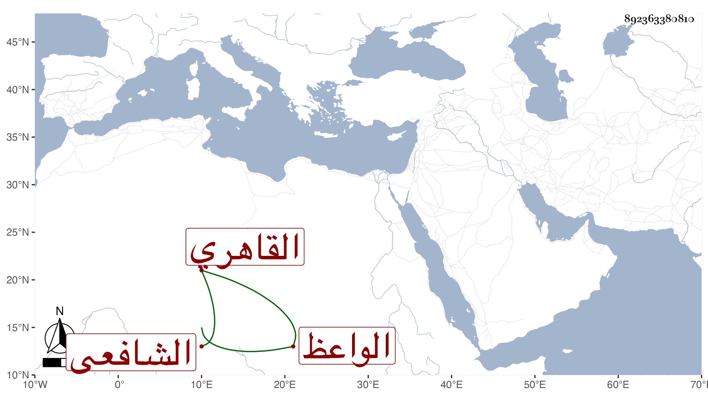

0902Sakhawi.DawLamic.ITO20230111-ara1.EIS1600.892363380810
Biography ID: 892363380810
399
عبد الوهاب بن محمد بن عمر بن علي التاج السميساطي الأصل القائي ثم القاهري الشافعي الواعظ ويعرف بالفيومي اشتغل يسيرا بالفقه والعربية وجود القرآن وعلم في بيت ابن مزهر وتردد لشيخنا مع ابن أسد وغيره وكتب بخطه الكثير بل قرأ علي من تصانيفي وغيرها وكذا لازم الديمي وتكسب بقراءة الحديث ونحوها من الرقائق والتفسير في كثير من المشاهد ونحوها وصحب الجلال البكري وغيره كالمخيوي الطوخي ثم كبر وانقطع .
